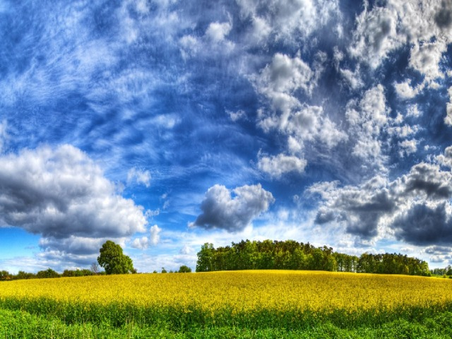
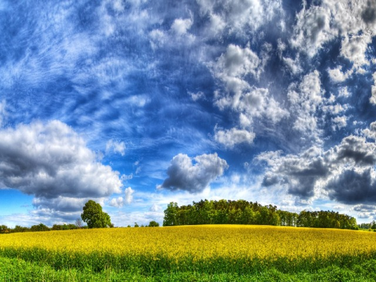

В дні, прожиті печально і просто,
все було як незайманий сніг.
Темнооким чудесним гостем
я чекала тебе з доріг.
Забарився, прийшов нескоро.
Марнувала я дні в жалю.
І в недобру для серця пору
я сказала комусь: — Люблю.
Хтось підносив мене до неба,
я вдихала його, голубе...
І не мріяла вже про тебе,
щоби цим це образить тебе.
А буває — спинюсь на місці,
простягаю руки без слів,
ніби жду чудесної вісті
з не відомих нікому країв...
Є для серця така покута -
забувати скоріше зло,
аніж те, що мусило бути
і чого в житті не було.
Очима ти сказав мені: люблю.
Душа складала свій тяжкий екзамен.
Мов тихий дзвін гірського кришталю
несказане лишилось несказанним.
Життя ішло, минуло той перон,
Гукала тиша рупором вокзальним.
Багато слів написано пером.
Несказане лишилось несказанним.
Світали ночі, вечоріли дні.
Не раз хитнула доля терезами.
Слова як сонце сходили в мені.
Несказане лишилось несказанним.